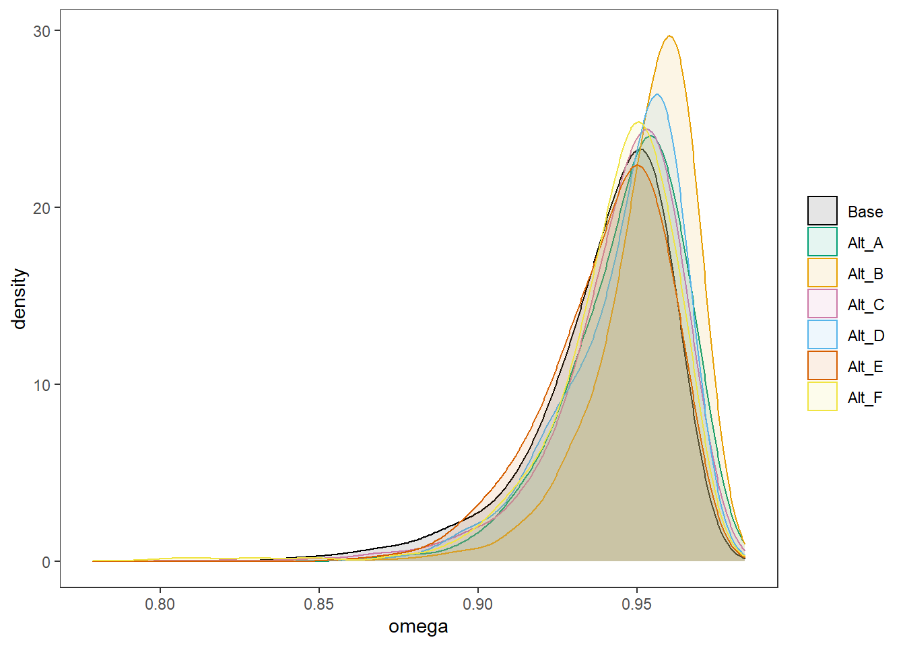

Last updated: 2022-01-18
Checks: 5 1
Knit directory: Padgett-Dissertation/
This reproducible R Markdown analysis was created with workflowr (version 1.6.2). The Checks tab describes the reproducibility checks that were applied when the results were created. The Past versions tab lists the development history.
Great job! The global environment was empty. Objects defined in the global environment can affect the analysis in your R Markdown file in unknown ways. For reproduciblity it’s best to always run the code in an empty environment.
The command set.seed(20210401) was run prior to running the code in the R Markdown file. Setting a seed ensures that any results that rely on randomness, e.g. subsampling or permutations, are reproducible.
Great job! Recording the operating system, R version, and package versions is critical for reproducibility.
Nice! There were no cached chunks for this analysis, so you can be confident that you successfully produced the results during this run.
Great job! Using relative paths to the files within your workflowr project makes it easier to run your code on other machines.
Tracking code development and connecting the code version to the results is critical for reproducibility. To start using Git, open the Terminal and type git init in your project directory.
This project is not being versioned with Git. To obtain the full reproducibility benefits of using workflowr, please see ?wflow_start.
# Load packages & utility functions
source("code/load_packages.R")
source("code/load_utility_functions.R")
# environment options
options(scipen = 999, digits=3)
library(diffIRT)
data("extraversion")
mydata <- na.omit(extraversion)
# model constants
# Save parameters
jags.params <- c("tau",
"lambda","lambda.std",
"theta",
"icept",
"prec",
"prec.s",
"sigma.ts",
"rho",
"reli.omega")
#data
jags.data <- list(
y = mydata[,1:10],
lrt = mydata[,11:20],
N = nrow(mydata),
nit = 10,
ncat = 2
)In part 1, the emphasis was on investigating the effect of the factor loading prior on estimates of \(\omega\). This section aims to incorporate a tuning parameter for misclassification to test how influential the priors are for those parameters.
To help evaluate the tuning parameter’s effect, the posterior distribution for one individuals’ estimates of misclassification rates (\(\gamma\)) will be extracted on one item. The person selected is based on having the most variability in responses and response time. By choosing someone with a highly variable response pattern, I hope to be able to see the most effect on the proposed method.
dat.updated <- mydata %>%
as.data.frame()
dat.updated$var.x <- 0
for(i in 1:nrow(dat.updated)){
dat.updated$var.x[i] <- var(unlist(c(dat.updated[i,1:10])))
}
which(dat.updated$var.x == max(dat.updated$var.x))[1] 98 109 120ppdat <- dat.updated[which(dat.updated$var.x == max(dat.updated$var.x)),]
kable(ppdat, format="html", digits=2) %>%
kable_styling(full_width = T)| X[1] | X[2] | X[3] | X[4] | X[5] | X[6] | X[7] | X[8] | X[9] | X[10] | T[1] | T[2] | T[3] | T[4] | T[5] | T[6] | T[7] | T[8] | T[9] | T[10] | var.x | |
|---|---|---|---|---|---|---|---|---|---|---|---|---|---|---|---|---|---|---|---|---|---|
| 98 | 1 | 0 | 1 | 0 | 0 | 1 | 1 | 1 | 0 | 0 | 0.70 | 1.24 | 1.81 | 1.46 | 1.11 | 1.23 | 1.25 | 1.09 | 2.75 | 2.73 | 0.28 |
| 109 | 0 | 0 | 0 | 1 | 0 | 1 | 1 | 1 | 1 | 0 | 1.74 | 1.35 | 3.27 | 0.96 | 2.68 | 1.60 | 1.04 | 1.15 | 1.11 | 1.98 | 0.28 |
| 120 | 0 | 1 | 0 | 0 | 0 | 1 | 1 | 1 | 1 | 0 | 1.74 | 1.15 | 1.19 | 3.44 | 1.33 | 2.08 | 1.58 | 2.33 | 1.88 | 0.84 | 0.28 |
# 109
# item 3A tuning parameter was added to the model to control how strong the parameters controlling misclassification are. The same five altnerative priors for factor loadings will be investigated in turn as well.
The updated model with the tuning parameter is
cat(read_file(paste0(w.d, "/code/study_4/model_4w_xi.txt")))model {
### Model
for(p in 1:N){
for(i in 1:nit){
# data model
y[p,i] ~ dbern(omega[p,i,2])
# LRV
ystar[p,i] ~ dnorm(lambda[i]*eta[p], 1)
# Pr(nu = 2)
pi[p,i,2] = phi(ystar[p,i] - tau[i,1])
# Pr(nu = 1)
pi[p,i,1] = 1 - phi(ystar[p,i] - tau[i,1])
# log-RT model
dev[p,i]<-lambda[i]*(eta[p] - tau[i,1])
mu.lrt[p,i] <- icept[i] - speed[p] - rho * abs(dev[p,i])
lrt[p,i] ~ dnorm(mu.lrt[p,i], prec[i])
# MISCLASSIFICATION MODEL
for(c in 1:ncat){
# generate informative prior for misclassificaiton
# parameters based on RT
for(ct in 1:ncat){
alpha[p,i,ct,c] <- ifelse(c == ct,
ilogit(lrt[p,i]),
(1/(ncat-1))*(1-ilogit(lrt[p,i]))
)
}
# sample misclassification parameters using the informative priors
gamma[p,i,c,1:ncat] ~ ddirch(xi*alpha[p,i,c,1:ncat])
# observed category prob (Pr(y=c))
omega[p,i, c] = gamma[p,i,c,1]*pi[p,i,1] +
gamma[p,i,c,2]*pi[p,i,2]
}
}
}
### Priors
# person parameters
for(p in 1:N){
eta[p] ~ dnorm(0, 1) # latent ability
speed[p]~dnorm(sigma.ts*eta[p],prec.s) # latent speed
}
sigma.ts ~ dnorm(0, 0.1)
prec.s ~ dgamma(.1,.1)
# transformations
sigma.t = pow(prec.s, -1) + pow(sigma.ts, 2) # speed variance
cor.ts = sigma.ts/(pow(sigma.t,0.5)) # LV correlation
for(i in 1:nit){
# lrt parameters
icept[i]~dnorm(0,.1)
prec[i]~dgamma(.1,.1)
# Thresholds
tau[i, 1] ~ dnorm(0.0,0.1)
# loadings
lambda[i] ~ dnorm(0, .44)T(0,)
# LRV total variance
# total variance = residual variance + fact. Var.
theta[i] = 1 + pow(lambda[i],2)
# standardized loading
lambda.std[i] = lambda[i]/pow(theta[i],0.5)
}
rho~dnorm(0,.1)I(0,)
# compute omega
lambda_sum[1] = lambda[1]
for(i in 2:nit){
#lambda_sum (sum factor loadings)
lambda_sum[i] = lambda_sum[i-1]+lambda[i]
}
reli.omega = (pow(lambda_sum[nit],2))/(pow(lambda_sum[nit],2)+nit)
}First, the tuning parameter (\(\xi\)) is assumed a fixed value (0.5, 1, 2, 10, 100). These five conditions will be used to see if \(\xi\) influences the posterior of \(\omega\).
Initially, the base prior for the factor loadings is used.
# Save parameters
jags.params <- c("lambda.std",
"reli.omega",
"gamma[109,1,1,1]",
"gamma[109,1,1,2]",
"gamma[109,1,2,1]",
"gamma[109,1,2,2]",
"omega[109,1,2]",
"pi[109,1,2]",
"gamma[98,1,1,1]",
"gamma[98,1,1,2]",
"gamma[98,1,2,1]",
"gamma[98,1,2,2]",
"omega[98,1,2]",
"pi[98,1,2]")
# initial-values
jags.inits <- function(){
list(
"tau"=matrix(c(-0.64, -0.09, -1.05, -1.42, -0.11, -1.29, -1.59, -1.81, -0.93, -1.11), ncol=1, nrow=10),
"lambda"=rep(0.7,10),
"eta"=rnorm(142),
"speed"=rnorm(142),
"ystar"=matrix(c(0.7*rep(rnorm(142),10)), ncol=10),
"rho"=0.1,
"icept"=rep(0, 10),
"prec.s"=10,
"prec"=rep(4, 10),
"sigma.ts"=0.1
)
}
jags.data <- list(
y = mydata[,1:10],
lrt = mydata[,11:20],
N = nrow(mydata),
nit = 10,
ncat = 2,
xi = 1
)
# Run model
fit.base_prior <- R2jags::jags(
model = paste0(w.d, "/code/study_4/model_4w_xi.txt"),
parameters.to.save = jags.params,
inits = jags.inits,
data = jags.data,
n.chains = 4,
n.burnin = 5000,
n.iter = 10000
)module glm loadedCompiling model graph
Resolving undeclared variables
Allocating nodes
Graph information:
Observed stochastic nodes: 2840
Unobserved stochastic nodes: 4587
Total graph size: 45400
Initializing modelprint(fit.base_prior, width=1000)Inference for Bugs model at "C:/Users/noahp/Documents/GitHub/Padgett-Dissertation/code/study_4/model_4w_xi.txt", fit using jags,
4 chains, each with 10000 iterations (first 5000 discarded), n.thin = 5
n.sims = 4000 iterations saved
mu.vect sd.vect 2.5% 25% 50% 75% 97.5% Rhat n.eff
gamma[109,1,1,1] 0.851 0.250 0.109 0.816 0.987 1.000 1.000 1.00 3700
gamma[109,1,1,2] 0.149 0.250 0.000 0.000 0.013 0.184 0.891 1.00 4000
gamma[109,1,2,1] 0.119 0.220 0.000 0.000 0.006 0.125 0.811 1.02 180
gamma[109,1,2,2] 0.881 0.220 0.189 0.875 0.994 1.000 1.000 1.01 4000
gamma[98,1,1,1] 0.666 0.334 0.015 0.389 0.787 0.974 1.000 1.00 4000
gamma[98,1,1,2] 0.334 0.334 0.000 0.026 0.213 0.611 0.985 1.00 4000
gamma[98,1,2,1] 0.484 0.353 0.000 0.122 0.494 0.823 0.993 1.01 470
gamma[98,1,2,2] 0.516 0.353 0.007 0.177 0.506 0.878 1.000 1.01 330
lambda.std[1] 0.814 0.111 0.523 0.772 0.845 0.892 0.944 1.03 900
lambda.std[2] 0.820 0.134 0.466 0.764 0.857 0.919 0.964 1.08 57
lambda.std[3] 0.890 0.082 0.685 0.868 0.911 0.939 0.964 1.22 85
lambda.std[4] 0.690 0.240 0.090 0.560 0.773 0.878 0.948 1.14 38
lambda.std[5] 0.643 0.219 0.141 0.503 0.684 0.820 0.934 1.11 37
lambda.std[6] 0.496 0.241 0.032 0.313 0.532 0.688 0.872 1.01 410
lambda.std[7] 0.447 0.242 0.022 0.248 0.459 0.650 0.856 1.01 330
lambda.std[8] 0.444 0.249 0.023 0.236 0.447 0.651 0.868 1.06 56
lambda.std[9] 0.704 0.165 0.265 0.631 0.743 0.822 0.922 1.05 110
lambda.std[10] 0.856 0.104 0.554 0.835 0.882 0.918 0.951 1.24 56
omega[109,1,2] 0.226 0.225 0.000 0.029 0.145 0.386 0.756 1.01 1200
omega[98,1,2] 0.619 0.236 0.137 0.460 0.624 0.818 0.985 1.01 690
pi[109,1,2] 0.187 0.248 0.000 0.005 0.065 0.291 0.883 1.01 670
pi[98,1,2] 0.316 0.338 0.000 0.011 0.172 0.584 0.990 1.02 160
reli.omega 0.939 0.022 0.881 0.930 0.944 0.954 0.967 1.10 36
deviance 3219.662 44.987 3132.714 3189.379 3219.779 3250.228 3306.331 1.02 130
For each parameter, n.eff is a crude measure of effective sample size,
and Rhat is the potential scale reduction factor (at convergence, Rhat=1).
DIC info (using the rule, pD = var(deviance)/2)
pD = 988.7 and DIC = 4208.4
DIC is an estimate of expected predictive error (lower deviance is better).jags.data <- list(
y = mydata[,1:10],
lrt = mydata[,11:20],
N = nrow(mydata),
nit = 10,
ncat = 2,
xi = 0.5
)
# Run model
fit.alt_a <- R2jags::jags(
model = paste0(w.d, "/code/study_4/model_4w_xi.txt"),
parameters.to.save = jags.params,
inits = jags.inits,
data = jags.data,
n.chains = 4,
n.burnin = 5000,
n.iter = 10000
)Compiling model graph
Resolving undeclared variables
Allocating nodes
Graph information:
Observed stochastic nodes: 2840
Unobserved stochastic nodes: 4587
Total graph size: 45400
Initializing modelprint(fit.alt_a, width=1000)Inference for Bugs model at "C:/Users/noahp/Documents/GitHub/Padgett-Dissertation/code/study_4/model_4w_xi.txt", fit using jags,
4 chains, each with 10000 iterations (first 5000 discarded), n.thin = 5
n.sims = 4000 iterations saved
mu.vect sd.vect 2.5% 25% 50% 75% 97.5% Rhat n.eff
gamma[109,1,1,1] 0.858 0.285 0.015 0.911 1.000 1.000 1.000 1.00 4000
gamma[109,1,1,2] 0.142 0.285 0.000 0.000 0.000 0.089 0.985 1.00 2700
gamma[109,1,2,1] 0.126 0.265 0.000 0.000 0.000 0.070 0.981 1.15 47
gamma[109,1,2,2] 0.874 0.265 0.019 0.930 1.000 1.000 1.000 1.18 72
gamma[98,1,1,1] 0.669 0.384 0.000 0.280 0.890 0.998 1.000 1.00 3600
gamma[98,1,1,2] 0.331 0.384 0.000 0.002 0.110 0.720 1.000 1.00 2500
gamma[98,1,2,1] 0.520 0.403 0.000 0.045 0.582 0.944 1.000 1.11 94
gamma[98,1,2,2] 0.480 0.403 0.000 0.056 0.418 0.955 1.000 1.03 300
lambda.std[1] 0.806 0.118 0.498 0.756 0.835 0.886 0.945 1.03 890
lambda.std[2] 0.847 0.119 0.534 0.803 0.882 0.929 0.969 1.13 41
lambda.std[3] 0.905 0.066 0.745 0.887 0.921 0.942 0.968 1.26 42
lambda.std[4] 0.757 0.210 0.136 0.704 0.832 0.903 0.952 1.41 14
lambda.std[5] 0.654 0.202 0.161 0.537 0.693 0.808 0.956 1.08 54
lambda.std[6] 0.505 0.252 0.031 0.302 0.533 0.712 0.897 1.02 280
lambda.std[7] 0.466 0.249 0.031 0.258 0.482 0.684 0.862 1.01 300
lambda.std[8] 0.432 0.240 0.019 0.227 0.444 0.635 0.834 1.03 140
lambda.std[9] 0.739 0.156 0.321 0.667 0.779 0.851 0.928 1.06 98
lambda.std[10] 0.868 0.105 0.558 0.849 0.898 0.926 0.961 1.31 32
omega[109,1,2] 0.225 0.233 0.000 0.021 0.140 0.381 0.784 1.03 120
omega[98,1,2] 0.654 0.259 0.107 0.473 0.674 0.888 0.998 1.01 1300
pi[109,1,2] 0.217 0.267 0.000 0.009 0.097 0.338 0.916 1.08 95
pi[98,1,2] 0.298 0.323 0.000 0.009 0.161 0.550 0.975 1.01 410
reli.omega 0.946 0.018 0.903 0.936 0.949 0.959 0.972 1.03 190
deviance 3052.228 48.380 2958.134 3019.520 3052.120 3084.823 3147.784 1.01 440
For each parameter, n.eff is a crude measure of effective sample size,
and Rhat is the potential scale reduction factor (at convergence, Rhat=1).
DIC info (using the rule, pD = var(deviance)/2)
pD = 1163.4 and DIC = 4215.6
DIC is an estimate of expected predictive error (lower deviance is better).jags.data <- list(
y = mydata[,1:10],
lrt = mydata[,11:20],
N = nrow(mydata),
nit = 10,
ncat = 2,
xi = 2
)
# Run model
fit.alt_b <- R2jags::jags(
model = paste0(w.d, "/code/study_4/model_4w_xi.txt"),
parameters.to.save = jags.params,
inits = jags.inits,
data = jags.data,
n.chains = 4,
n.burnin = 5000,
n.iter = 10000
)Compiling model graph
Resolving undeclared variables
Allocating nodes
Graph information:
Observed stochastic nodes: 2840
Unobserved stochastic nodes: 4587
Total graph size: 45400
Initializing modelprint(fit.alt_b, width=1000)Inference for Bugs model at "C:/Users/noahp/Documents/GitHub/Padgett-Dissertation/code/study_4/model_4w_xi.txt", fit using jags,
4 chains, each with 10000 iterations (first 5000 discarded), n.thin = 5
n.sims = 4000 iterations saved
mu.vect sd.vect 2.5% 25% 50% 75% 97.5% Rhat n.eff
gamma[109,1,1,1] 0.846 0.209 0.245 0.772 0.946 0.994 1.000 1.00 4000
gamma[109,1,1,2] 0.154 0.209 0.000 0.006 0.054 0.228 0.755 1.00 4000
gamma[109,1,2,1] 0.130 0.189 0.000 0.003 0.040 0.179 0.710 1.14 65
gamma[109,1,2,2] 0.870 0.189 0.290 0.821 0.960 0.997 1.000 1.01 1000
gamma[98,1,1,1] 0.671 0.271 0.089 0.470 0.738 0.911 0.997 1.00 4000
gamma[98,1,1,2] 0.329 0.271 0.003 0.089 0.262 0.530 0.911 1.00 4000
gamma[98,1,2,1] 0.438 0.279 0.008 0.197 0.423 0.669 0.945 1.01 1600
gamma[98,1,2,2] 0.562 0.279 0.055 0.331 0.577 0.803 0.992 1.00 4000
lambda.std[1] 0.802 0.149 0.395 0.754 0.850 0.905 0.951 1.13 44
lambda.std[2] 0.886 0.089 0.641 0.859 0.916 0.945 0.972 1.08 110
lambda.std[3] 0.895 0.062 0.732 0.876 0.910 0.934 0.962 1.05 180
lambda.std[4] 0.756 0.229 0.120 0.675 0.847 0.920 0.966 1.01 820
lambda.std[5] 0.688 0.229 0.118 0.557 0.748 0.873 0.971 1.02 380
lambda.std[6] 0.519 0.237 0.041 0.342 0.554 0.717 0.875 1.01 240
lambda.std[7] 0.443 0.239 0.028 0.247 0.452 0.642 0.847 1.00 610
lambda.std[8] 0.454 0.250 0.025 0.243 0.467 0.655 0.874 1.01 330
lambda.std[9] 0.743 0.161 0.313 0.668 0.781 0.863 0.941 1.03 500
lambda.std[10] 0.890 0.069 0.700 0.869 0.906 0.935 0.967 1.02 320
omega[109,1,2] 0.252 0.223 0.001 0.053 0.192 0.416 0.747 1.04 140
omega[98,1,2] 0.544 0.205 0.135 0.413 0.528 0.692 0.935 1.00 4000
pi[109,1,2] 0.204 0.261 0.000 0.006 0.079 0.323 0.901 1.03 190
pi[98,1,2] 0.275 0.314 0.000 0.006 0.134 0.497 0.969 1.02 300
reli.omega 0.952 0.016 0.911 0.945 0.956 0.964 0.974 1.06 100
deviance 3358.240 41.510 3277.355 3330.244 3358.383 3387.532 3438.953 1.01 300
For each parameter, n.eff is a crude measure of effective sample size,
and Rhat is the potential scale reduction factor (at convergence, Rhat=1).
DIC info (using the rule, pD = var(deviance)/2)
pD = 853.5 and DIC = 4211.7
DIC is an estimate of expected predictive error (lower deviance is better).jags.data <- list(
y = mydata[,1:10],
lrt = mydata[,11:20],
N = nrow(mydata),
nit = 10,
ncat = 2,
xi = 10
)
# Run model
fit.alt_c <- R2jags::jags(
model = paste0(w.d, "/code/study_4/model_4w_xi.txt"),
parameters.to.save = jags.params,
inits = jags.inits,
data = jags.data,
n.chains = 4,
n.burnin = 5000,
n.iter = 10000
)Compiling model graph
Resolving undeclared variables
Allocating nodes
Graph information:
Observed stochastic nodes: 2840
Unobserved stochastic nodes: 4587
Total graph size: 45400
Initializing modelprint(fit.alt_c, width=1000)Inference for Bugs model at "C:/Users/noahp/Documents/GitHub/Padgett-Dissertation/code/study_4/model_4w_xi.txt", fit using jags,
4 chains, each with 10000 iterations (first 5000 discarded), n.thin = 5
n.sims = 4000 iterations saved
mu.vect sd.vect 2.5% 25% 50% 75% 97.5% Rhat n.eff
gamma[109,1,1,1] 0.852 0.107 0.597 0.793 0.874 0.933 0.989 1.00 4000
gamma[109,1,1,2] 0.148 0.107 0.011 0.067 0.126 0.207 0.403 1.00 3800
gamma[109,1,2,1] 0.143 0.102 0.012 0.063 0.123 0.200 0.390 1.00 4000
gamma[109,1,2,2] 0.857 0.102 0.610 0.800 0.877 0.937 0.988 1.00 4000
gamma[98,1,1,1] 0.672 0.141 0.375 0.574 0.684 0.780 0.910 1.00 4000
gamma[98,1,1,2] 0.328 0.141 0.090 0.220 0.316 0.426 0.625 1.00 4000
gamma[98,1,2,1] 0.354 0.145 0.104 0.245 0.344 0.452 0.660 1.00 4000
gamma[98,1,2,2] 0.646 0.145 0.340 0.548 0.656 0.755 0.896 1.00 4000
lambda.std[1] 0.797 0.128 0.460 0.740 0.832 0.889 0.947 1.06 100
lambda.std[2] 0.832 0.120 0.513 0.781 0.868 0.918 0.961 1.04 350
lambda.std[3] 0.905 0.076 0.747 0.889 0.922 0.945 0.970 1.24 260
lambda.std[4] 0.774 0.199 0.184 0.716 0.844 0.910 0.955 1.14 39
lambda.std[5] 0.626 0.222 0.112 0.489 0.665 0.800 0.938 1.03 110
lambda.std[6] 0.476 0.241 0.033 0.284 0.499 0.677 0.859 1.01 280
lambda.std[7] 0.479 0.244 0.035 0.280 0.499 0.689 0.858 1.02 270
lambda.std[8] 0.438 0.259 0.021 0.216 0.428 0.660 0.878 1.02 170
lambda.std[9] 0.695 0.171 0.249 0.615 0.735 0.820 0.917 1.04 100
lambda.std[10] 0.884 0.071 0.722 0.864 0.901 0.926 0.956 1.10 440
omega[109,1,2] 0.278 0.193 0.029 0.127 0.232 0.393 0.750 1.01 420
omega[98,1,2] 0.464 0.143 0.188 0.368 0.470 0.548 0.774 1.00 550
pi[109,1,2] 0.196 0.251 0.000 0.006 0.077 0.304 0.881 1.03 170
pi[98,1,2] 0.309 0.325 0.000 0.012 0.181 0.565 0.979 1.02 260
reli.omega 0.944 0.021 0.890 0.935 0.948 0.958 0.971 1.07 51
deviance 3574.408 33.995 3509.241 3551.988 3573.156 3596.917 3642.671 1.01 220
For each parameter, n.eff is a crude measure of effective sample size,
and Rhat is the potential scale reduction factor (at convergence, Rhat=1).
DIC info (using the rule, pD = var(deviance)/2)
pD = 570.4 and DIC = 4144.8
DIC is an estimate of expected predictive error (lower deviance is better).jags.data <- list(
y = mydata[,1:10],
lrt = mydata[,11:20],
N = nrow(mydata),
nit = 10,
ncat = 2,
xi = 100
)
# Run model
fit.alt_d <- R2jags::jags(
model = paste0(w.d, "/code/study_4/model_4w_xi.txt"),
parameters.to.save = jags.params,
inits = jags.inits,
data = jags.data,
n.chains = 4,
n.burnin = 5000,
n.iter = 10000
)Compiling model graph
Resolving undeclared variables
Allocating nodes
Graph information:
Observed stochastic nodes: 2840
Unobserved stochastic nodes: 4587
Total graph size: 45400
Initializing modelprint(fit.alt_d, width=1000)Inference for Bugs model at "C:/Users/noahp/Documents/GitHub/Padgett-Dissertation/code/study_4/model_4w_xi.txt", fit using jags,
4 chains, each with 10000 iterations (first 5000 discarded), n.thin = 5
n.sims = 4000 iterations saved
mu.vect sd.vect 2.5% 25% 50% 75% 97.5% Rhat n.eff
gamma[109,1,1,1] 0.851 0.036 0.773 0.828 0.853 0.876 0.915 1.00 4000
gamma[109,1,1,2] 0.149 0.036 0.085 0.124 0.147 0.172 0.227 1.00 4000
gamma[109,1,2,1] 0.149 0.036 0.086 0.123 0.146 0.172 0.223 1.00 3000
gamma[109,1,2,2] 0.851 0.036 0.777 0.828 0.854 0.877 0.914 1.00 3200
gamma[98,1,1,1] 0.669 0.047 0.574 0.637 0.671 0.702 0.758 1.00 4000
gamma[98,1,1,2] 0.331 0.047 0.242 0.298 0.329 0.363 0.426 1.00 4000
gamma[98,1,2,1] 0.333 0.046 0.250 0.301 0.332 0.364 0.423 1.00 4000
gamma[98,1,2,2] 0.667 0.046 0.577 0.636 0.668 0.699 0.750 1.00 4000
lambda.std[1] 0.810 0.124 0.471 0.764 0.843 0.895 0.946 1.11 120
lambda.std[2] 0.833 0.131 0.470 0.786 0.875 0.923 0.965 1.03 150
lambda.std[3] 0.903 0.072 0.705 0.887 0.923 0.945 0.969 1.24 38
lambda.std[4] 0.788 0.182 0.212 0.751 0.854 0.905 0.948 1.04 340
lambda.std[5] 0.603 0.236 0.085 0.442 0.645 0.791 0.933 1.06 89
lambda.std[6] 0.472 0.250 0.027 0.258 0.499 0.680 0.871 1.00 510
lambda.std[7] 0.464 0.246 0.026 0.259 0.480 0.677 0.849 1.03 100
lambda.std[8] 0.446 0.254 0.028 0.225 0.450 0.666 0.863 1.02 130
lambda.std[9] 0.698 0.172 0.263 0.611 0.743 0.826 0.917 1.01 230
lambda.std[10] 0.881 0.084 0.671 0.863 0.905 0.930 0.958 1.19 120
omega[109,1,2] 0.277 0.172 0.100 0.156 0.210 0.346 0.748 1.01 430
omega[98,1,2] 0.430 0.113 0.271 0.344 0.400 0.503 0.677 1.00 790
pi[109,1,2] 0.183 0.242 0.000 0.006 0.069 0.278 0.866 1.01 840
pi[98,1,2] 0.284 0.320 0.000 0.007 0.140 0.511 0.976 1.02 330
reli.omega 0.945 0.019 0.898 0.935 0.950 0.959 0.970 1.04 93
deviance 3640.398 29.818 3583.792 3620.407 3639.461 3660.089 3700.276 1.00 560
For each parameter, n.eff is a crude measure of effective sample size,
and Rhat is the potential scale reduction factor (at convergence, Rhat=1).
DIC info (using the rule, pD = var(deviance)/2)
pD = 442.5 and DIC = 4082.9
DIC is an estimate of expected predictive error (lower deviance is better).Next, the tuning parameter is not assumed a fixed value, but allowed to vary.
jags.params <- c("lambda.std",
"reli.omega",
"gamma[109,1,1,1]",
"gamma[109,1,1,2]",
"gamma[109,1,2,1]",
"gamma[109,1,2,2]",
"omega[109,1,2]",
"pi[109,1,2]",
"gamma[98,1,1,1]",
"gamma[98,1,1,2]",
"gamma[98,1,2,1]",
"gamma[98,1,2,2]",
"omega[98,1,2]",
"pi[98,1,2]",
"xi")
jags.data <- list(
y = mydata[,1:10],
lrt = mydata[,11:20],
N = nrow(mydata),
nit = 10,
ncat = 2
)
# Run model
fit.alt_e <- R2jags::jags(
model = paste0(w.d, "/code/study_4/model_4w_xi_uniform.txt"),
parameters.to.save = jags.params,
inits = jags.inits,
data = jags.data,
n.chains = 4,
n.burnin = 5000,
n.iter = 10000
)Compiling model graph
Resolving undeclared variables
Allocating nodes
Graph information:
Observed stochastic nodes: 2840
Unobserved stochastic nodes: 4588
Total graph size: 45401
Initializing modelprint(fit.alt_e, width=1000)Inference for Bugs model at "C:/Users/noahp/Documents/GitHub/Padgett-Dissertation/code/study_4/model_4w_xi_uniform.txt", fit using jags,
4 chains, each with 10000 iterations (first 5000 discarded), n.thin = 5
n.sims = 4000 iterations saved
mu.vect sd.vect 2.5% 25% 50% 75% 97.5% Rhat n.eff
gamma[109,1,1,1] 0.848 0.234 0.161 0.786 0.972 0.999 1.000 1.01 4000
gamma[109,1,1,2] 0.152 0.234 0.000 0.001 0.028 0.214 0.839 1.00 1300
gamma[109,1,2,1] 0.116 0.192 0.000 0.000 0.018 0.145 0.711 1.12 39
gamma[109,1,2,2] 0.884 0.192 0.289 0.855 0.982 1.000 1.000 1.01 470
gamma[98,1,1,1] 0.666 0.310 0.037 0.418 0.758 0.951 1.000 1.00 4000
gamma[98,1,1,2] 0.334 0.310 0.000 0.049 0.242 0.582 0.963 1.01 1000
gamma[98,1,2,1] 0.482 0.326 0.001 0.181 0.483 0.791 0.987 1.00 1600
gamma[98,1,2,2] 0.518 0.326 0.013 0.209 0.517 0.819 0.999 1.01 370
lambda.std[1] 0.814 0.120 0.499 0.766 0.847 0.896 0.948 1.04 340
lambda.std[2] 0.838 0.124 0.512 0.795 0.876 0.924 0.966 1.04 380
lambda.std[3] 0.902 0.057 0.751 0.881 0.918 0.939 0.965 1.11 43
lambda.std[4] 0.717 0.228 0.085 0.633 0.797 0.884 0.947 1.00 2400
lambda.std[5] 0.582 0.238 0.067 0.415 0.626 0.777 0.914 1.11 46
lambda.std[6] 0.482 0.236 0.034 0.300 0.512 0.678 0.851 1.01 440
lambda.std[7] 0.451 0.245 0.024 0.245 0.464 0.661 0.847 1.02 140
lambda.std[8] 0.406 0.250 0.017 0.192 0.386 0.621 0.847 1.01 320
lambda.std[9] 0.693 0.166 0.273 0.604 0.727 0.815 0.916 1.09 90
lambda.std[10] 0.875 0.075 0.701 0.850 0.895 0.923 0.952 1.07 110
omega[109,1,2] 0.225 0.218 0.000 0.036 0.156 0.381 0.730 1.01 490
omega[98,1,2] 0.587 0.234 0.117 0.429 0.586 0.781 0.973 1.00 4000
pi[109,1,2] 0.168 0.235 0.000 0.003 0.051 0.249 0.839 1.05 240
pi[98,1,2] 0.270 0.320 0.000 0.003 0.107 0.495 0.965 1.06 100
reli.omega 0.940 0.019 0.896 0.929 0.944 0.954 0.968 1.04 80
xi 1.353 0.113 1.073 1.280 1.377 1.448 1.496 1.17 21
deviance 3287.547 46.837 3191.437 3257.334 3288.810 3318.370 3377.055 1.05 66
For each parameter, n.eff is a crude measure of effective sample size,
and Rhat is the potential scale reduction factor (at convergence, Rhat=1).
DIC info (using the rule, pD = var(deviance)/2)
pD = 1047.6 and DIC = 4335.1
DIC is an estimate of expected predictive error (lower deviance is better).jags.data <- list(
y = mydata[,1:10],
lrt = mydata[,11:20],
N = nrow(mydata),
nit = 10,
ncat = 2
)
# Run model
fit.alt_f <- R2jags::jags(
model = paste0(w.d, "/code/study_4/model_4w_xi_gamma.txt"),
parameters.to.save = jags.params,
inits = jags.inits,
data = jags.data,
n.chains = 4,
n.burnin = 5000,
n.iter = 10000
)Compiling model graph
Resolving undeclared variables
Allocating nodes
Graph information:
Observed stochastic nodes: 2840
Unobserved stochastic nodes: 4588
Total graph size: 45400
Initializing modelprint(fit.alt_f, width=1000)Inference for Bugs model at "C:/Users/noahp/Documents/GitHub/Padgett-Dissertation/code/study_4/model_4w_xi_gamma.txt", fit using jags,
4 chains, each with 10000 iterations (first 5000 discarded), n.thin = 5
n.sims = 4000 iterations saved
mu.vect sd.vect 2.5% 25% 50% 75% 97.5% Rhat n.eff
gamma[109,1,1,1] 0.844 0.177 0.361 0.767 0.910 0.980 1.000 1.03 2500
gamma[109,1,1,2] 0.156 0.177 0.000 0.020 0.090 0.233 0.639 1.09 68
gamma[109,1,2,1] 0.137 0.161 0.000 0.018 0.078 0.195 0.580 1.06 90
gamma[109,1,2,2] 0.863 0.161 0.420 0.805 0.922 0.982 1.000 1.03 840
gamma[98,1,1,1] 0.663 0.227 0.164 0.506 0.697 0.847 0.988 1.03 430
gamma[98,1,1,2] 0.337 0.227 0.012 0.153 0.303 0.494 0.836 1.05 280
gamma[98,1,2,1] 0.393 0.234 0.017 0.206 0.379 0.558 0.879 1.05 200
gamma[98,1,2,2] 0.607 0.234 0.121 0.442 0.621 0.794 0.983 1.05 240
lambda.std[1] 0.795 0.135 0.419 0.741 0.833 0.888 0.947 1.06 67
lambda.std[2] 0.842 0.128 0.490 0.800 0.884 0.928 0.965 1.09 47
lambda.std[3] 0.894 0.064 0.722 0.871 0.910 0.934 0.972 1.11 60
lambda.std[4] 0.777 0.195 0.195 0.717 0.847 0.910 0.959 1.05 140
lambda.std[5] 0.602 0.224 0.090 0.458 0.648 0.779 0.908 1.02 140
lambda.std[6] 0.488 0.256 0.027 0.278 0.517 0.705 0.896 1.01 370
lambda.std[7] 0.452 0.244 0.022 0.246 0.469 0.657 0.851 1.02 220
lambda.std[8] 0.401 0.240 0.020 0.191 0.392 0.596 0.838 1.01 370
lambda.std[9] 0.735 0.149 0.348 0.666 0.770 0.841 0.918 1.06 110
lambda.std[10] 0.862 0.100 0.611 0.839 0.893 0.921 0.952 1.10 100
omega[109,1,2] 0.270 0.210 0.003 0.086 0.226 0.431 0.725 1.01 470
omega[98,1,2] 0.509 0.185 0.149 0.391 0.502 0.620 0.896 1.01 410
pi[109,1,2] 0.205 0.253 0.000 0.008 0.088 0.334 0.884 1.04 110
pi[98,1,2] 0.306 0.327 0.000 0.011 0.175 0.553 0.983 1.03 150
reli.omega 0.942 0.022 0.892 0.934 0.947 0.956 0.969 1.16 43
xi 3.787 1.654 1.787 2.555 3.459 4.628 8.238 2.46 5
deviance 3457.293 67.243 3322.064 3412.078 3460.349 3506.065 3580.213 1.68 8
For each parameter, n.eff is a crude measure of effective sample size,
and Rhat is the potential scale reduction factor (at convergence, Rhat=1).
DIC info (using the rule, pD = var(deviance)/2)
pD = 1247.2 and DIC = 4704.5
DIC is an estimate of expected predictive error (lower deviance is better).post.sims <- data.frame(
Base = fit.base_prior$BUGSoutput$sims.matrix[,"reli.omega"],
Alt_A = fit.alt_a$BUGSoutput$sims.matrix[,"reli.omega"],
Alt_B = fit.alt_b$BUGSoutput$sims.matrix[,"reli.omega"],
Alt_C = fit.alt_c$BUGSoutput$sims.matrix[,"reli.omega"],
Alt_D = fit.alt_d$BUGSoutput$sims.matrix[,"reli.omega"],
Alt_E = fit.alt_e$BUGSoutput$sims.matrix[,"reli.omega"],
Alt_F = fit.alt_f$BUGSoutput$sims.matrix[,"reli.omega"]
)
plot.post <- post.sims %>%
pivot_longer(
cols=everything(),
names_to="Prior",
values_to="omega"
) %>%
mutate(
Prior = factor(Prior, levels=c("Base", "Alt_A", "Alt_B", "Alt_C", "Alt_D", "Alt_E", "Alt_F"))
)
cols=c("Base"="black", "Alt_A"="#009e73", "Alt_B"="#E69F00", "Alt_C"="#CC79A7","Alt_D"="#56B4E9","Alt_E"="#d55e00","Alt_F"="#f0e442") #"#56B4E9", "#E69F00" "#CC79A7", "#d55e00", "#f0e442, " #0072b2"
# joint prior and post samples
#plot.prior$type="Prior"
#plot.post$type="Post"
#$plot.dat <- full_join(plot.prior, plot.post)
p <- ggplot(plot.post, aes(x=omega, color=Prior, fill=Prior))+
geom_density(adjust=2, alpha=0.1)+
scale_color_manual(values=cols, name=NULL)+
scale_fill_manual(values=cols, name=NULL)+
#facet_wrap(.~Prior, ncol=3, scales="free_y")+
theme_bw()+
theme(
panel.grid = element_blank()
)
p
ggsave(filename = "fig/study4_posterior_sensitity_omega_xi.pdf",plot=p,width = 7, height=4,units="in")
ggsave(filename = "fig/study4_posterior_sensitity_omega_xi.png",plot=p,width = 7, height=4,units="in")
sessionInfo()R version 4.0.5 (2021-03-31)
Platform: x86_64-w64-mingw32/x64 (64-bit)
Running under: Windows 10 x64 (build 22000)
Matrix products: default
locale:
[1] LC_COLLATE=English_United States.1252
[2] LC_CTYPE=English_United States.1252
[3] LC_MONETARY=English_United States.1252
[4] LC_NUMERIC=C
[5] LC_TIME=English_United States.1252
attached base packages:
[1] stats graphics grDevices utils datasets methods base
other attached packages:
[1] car_3.0-10 carData_3.0-4 mvtnorm_1.1-1
[4] LaplacesDemon_16.1.4 runjags_2.2.0-2 lme4_1.1-26
[7] Matrix_1.3-2 sirt_3.9-4 R2jags_0.6-1
[10] rjags_4-12 eRm_1.0-2 diffIRT_1.5
[13] statmod_1.4.35 xtable_1.8-4 kableExtra_1.3.4
[16] lavaan_0.6-7 polycor_0.7-10 bayesplot_1.8.0
[19] ggmcmc_1.5.1.1 coda_0.19-4 data.table_1.14.0
[22] patchwork_1.1.1 forcats_0.5.1 stringr_1.4.0
[25] dplyr_1.0.5 purrr_0.3.4 readr_1.4.0
[28] tidyr_1.1.3 tibble_3.1.0 ggplot2_3.3.5
[31] tidyverse_1.3.0 workflowr_1.6.2
loaded via a namespace (and not attached):
[1] minqa_1.2.4 TAM_3.5-19 colorspace_2.0-0 rio_0.5.26
[5] ellipsis_0.3.1 ggridges_0.5.3 rprojroot_2.0.2 fs_1.5.0
[9] rstudioapi_0.13 farver_2.1.0 fansi_0.4.2 lubridate_1.7.10
[13] xml2_1.3.2 codetools_0.2-18 splines_4.0.5 mnormt_2.0.2
[17] knitr_1.31 jsonlite_1.7.2 nloptr_1.2.2.2 broom_0.7.5
[21] dbplyr_2.1.0 compiler_4.0.5 httr_1.4.2 backports_1.2.1
[25] assertthat_0.2.1 cli_2.3.1 later_1.1.0.1 htmltools_0.5.1.1
[29] tools_4.0.5 gtable_0.3.0 glue_1.4.2 Rcpp_1.0.7
[33] cellranger_1.1.0 jquerylib_0.1.3 vctrs_0.3.6 svglite_2.0.0
[37] nlme_3.1-152 psych_2.0.12 xfun_0.21 ps_1.6.0
[41] openxlsx_4.2.3 rvest_1.0.0 lifecycle_1.0.0 MASS_7.3-53.1
[45] scales_1.1.1 ragg_1.1.1 hms_1.0.0 promises_1.2.0.1
[49] parallel_4.0.5 RColorBrewer_1.1-2 curl_4.3 yaml_2.2.1
[53] sass_0.3.1 reshape_0.8.8 stringi_1.5.3 highr_0.8
[57] zip_2.1.1 boot_1.3-27 rlang_0.4.10 pkgconfig_2.0.3
[61] systemfonts_1.0.1 evaluate_0.14 lattice_0.20-41 labeling_0.4.2
[65] tidyselect_1.1.0 GGally_2.1.1 plyr_1.8.6 magrittr_2.0.1
[69] R6_2.5.0 generics_0.1.0 DBI_1.1.1 foreign_0.8-81
[73] pillar_1.5.1 haven_2.3.1 withr_2.4.1 abind_1.4-5
[77] modelr_0.1.8 crayon_1.4.1 utf8_1.1.4 tmvnsim_1.0-2
[81] rmarkdown_2.7 grid_4.0.5 readxl_1.3.1 CDM_7.5-15
[85] pbivnorm_0.6.0 git2r_0.28.0 reprex_1.0.0 digest_0.6.27
[89] webshot_0.5.2 httpuv_1.5.5 textshaping_0.3.1 stats4_4.0.5
[93] munsell_0.5.0 viridisLite_0.3.0 bslib_0.2.4 R2WinBUGS_2.1-21